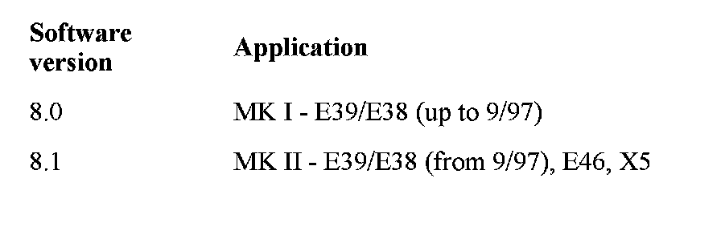
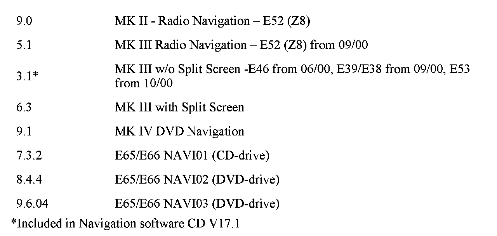

Navigation System - Software Information
SI B 84 01 02Phone, Navigation Systems
September 2007
Technical Service
This Service Information Bulletin supersedes S.I. B84 01 02 dated May 2007.
[NEW] designates changes to this revision
SUBJECT
Navigation System Operating Software
MODEL
E38 (7 Series)
E39 (5 Series) E46 (3 Series) E53 (X5)
E83 (X3)
E85, E86 (Z4) E65, E66 (7 Series)
SITUATION
[NEW] With the introduction of Navigation system operating software V30, there are currently 2 valid versions of Navigation software.
1. Navigation system operating software V17.1 is used on MK III systems without "Split Screen".
2. Navigation system operating software V30 is used on MK I, MK II, all other MK III navigation systems, MK IV DVD navigation systems on I-Bus vehicles, NAVI01, NAVI02 and NAVI03.
CORRECTION
Navigation system operating software should be updated under the following circumstances:
^ [NEW] E65/E66: Navigation system is inoperative after arrival at the destination.
^ [NEW] E65/E66: Incorrect address book
^ The Navigation computer has been replaced.
^ Progman prompts during programming/coding the navigation software to be updated.
^ If instructed by a Service Information Bulletin or the Technical Hotline.
[NEW] NEW FEATURES INTRODUCED WITH NAVIGATION SOFTWARE V30
No new features
NEW FEATURES INTRODUCED WITH NAVIGATION SOFTWARE V29
Destination input screen text changes:
^ "State/Province" instead of "Country"
^ "City/Postal Code" instead of "City/ZIP"
^ "Town/City" instead of "City" (only in conjunction with road maps before 2006-2)
FEATURES INTRODUCED WITH PRIOR NAVIGATION SOFTWARE V28
^ E83, E85, E86: Software fix for the following Display/Flap issues:
^ Display turns back on after switching "Monitor off"
^ Flap opens/closes by itself
^ Flap doesn't open
FEATURES INTRODUCED WITH PRIOR NAVIGATION SOFTWARE V27
Only E46 (3 Series), E53 (X5), E83 (X3), E85 (Z4) with DVD Navigation system
^ Disclaimer screen disappears automatically after 8 second
^ City/Town names displayed in the map
E46 (3 Series), E53 (X5), E83 (X3), E85 (Z4) with DVD Navigation system
E65, E66 (7 Series) DVD NAVI03 (from03/05)
^ Destination input when Country (UNITED STATES or CANADA) is selected via:
^ ZIP code (only for UNITED STATES)
^ City name
^ Destination input when an US State or a Canadian Province is selected via:
^ Street name
^ City name
^ ZIP code (only for UNITED STATES)
Note:
Only in conjunction with NAVTEQ DVD road Map 2006-2 or a more recent version
^ POI (Point of Interest) icons and "City Center" icons are displayed together
^ Travel Information (TMC) is no longer displayed (is inactive and not selectable)
^ Entries in "Address Book/Last Destination" displayed as:
^ City name, Street name (Destination entry via City name)
^ ZIP code, City name, Street name (Destination entry via ZIP code)
^ Product Information
^ Legal Disclaimer for usage of the Navigation system and the data on the NAVTEQ road maps
^ How to report missing or incorrect data feedback to NAVTEQ:
Website: www.navteq.com/bmwmaps
Email: bmwmaps@navteq.com
FEATURES INTRODUCED WITH PRIOR NAVIGATION SOFTWARE V26
^ The actual location is shown as an arrow in a circle
^ The destination is marked with a checkered flag
^ Map Positioning in "Travel Direction" can now be selected in scales up to 100 mls
^ Disable POI icons is now selectable on I-Bus DVD NAV systems in:
^ General Destinations
^ Travel Information
^ The following functions are now selectable on E65/E66 with NAVI03 (from 03/2005):
^ Hide Map Icons
^ General Destinations and Travel Information
[NEW] After loading NAVI SW V30, the vehicle must be driven to ensure the proper function of the Navigation system and the correct displaying of road number icons (e.g. Interstate Icons)
CHECKING SOFTWARE VERSION
MK I Systems
The software version is shown in the top right corner of the "setting" screen. The software/hardware version is displayed as "1-1/80". The numbers have the following meanings: first digit 1 - is a 1st generation navigation system (MK I); second digit 1 - is a 1st device variant (top navigation - MK Ic color screen); the last two digits 80 - are the software version of the graphic component (8.0).
MK II Systems
The software version is shown in the top right corner of the "setting" screen. The software/hardware version is displayed as "2-1/81". The numbers have the following meanings: first digit 2 - is a 2nd generation navigation system (MK II); second digit 1 - is a 1st device variant (top navigation - MK IIc color screen); the last two digits 81 - are the software version of the graphic component (8.1).
MK III Systems
The software version is shown in the top right corner of the "setting" screen. The software/hardware version is displayed as "3-1/63" or "3-2/63"(MK III with split screen). The numbers have the following meanings: first digit 3 - is a 3rd generation navigation system (MK III); second digit 1 - is a 1st device variant (top navigation - MK IIIc color screen), or 2 - is a 2nd device variant (radio navigation - MK IIIm monochrome display); the last two digits 63 - are the software version of the graphic component (6.3).
DVD navigation system for I-Bus vehicles
The software version is shown in the top right corner of the "setting" screen. The software/hardware version is displayed as "4-1/71". The numbers have the following meanings: first digit 4 - is a 4th generation navigation system (DVD); second digit 1 - is a 1st device variant (top navigation - DVD color screen); the last two digits 91 - are the software version of the graphic component (9.1).
E65, E66 Systems
^ Enter the Service Mode of the Control Display
^ Select "MOST Devices"
^ Scroll down and select "Navigation"
^ Scroll down a few pages until "Software Version" is displayed
^ Software Version for CD navigation (NAVI01) should be 7.3.2 (I-level E065-05-03-810.2)
^ Software Version for DVD navigation (NAVI02) should be 8.4.4 (I-level E065-05-03-800.2)
^ [NEW] Software Version for DVD navigation (NAVI03) should be 9.6.04 (I-level E065-07-09-500)


[NEW] Current Software Versions
LOADING SOFTWARE (ALL EXCEPT E65/E66)
For MK I, MK II, MK III, and DVD NAV systems (except E65/E66) use the following software loading instructions:
1. Turn ignition to position 1 (terminal R).
Do not cycle the key or perform diagnosis while installing the new software. Make sure that the power supply is stable, i.e. do not switch on any electrical loads.
2. Activate "GPS-Navigation" and acknowledge the screen disclaimer by pushing the rotary knob.
3. Remove the map CD from the Navigation computer by pressing "eject" button.
4. Insert the Navigation Software CD (V17.1 P/N 01 59 9 789 299 index "x" for MK III without split screen, V29 P/N 01 59 0 141 891 index "v" for all other versions).
5. Mark I System (up to 9/97 production):
After a few seconds, the BMW roundel will appear on the board monitor and will be "filled in" clockwise to show the progress of loading (approx. 4-6 minutes).
Mark II System (from 9/97 production),
Mark III System (E46 from 06/00 and E38/E39/E52 from 09/00 production),
DVD navigation system (E46, E39, E52 from 09/02 and E53, E85 from 10/02 production):
After a few seconds, a menu of notes on loading procedure and "progress" bar appear on the board monitor.
When the loading process has been completed, the message "Software has been successfully loaded" is displayed.
6. Remove the operating software CD and confirm the end of the loading process by pressing the rotary push-button on the board monitor. "OK" appears in the display.
7. Drive the vehicle before delivering to the customer to ensure the correct function and displaying (Interstate Icons) of the Navigation system.
LOADING SOFTWARE (E65, E66 ONLY)
[NEW] When programming any E65, E66 using Progman V27.0 or higher, you will be prompted by the Progman screen that "BMW Navigation CD Version 30" must be loaded prior to programming the vehicle.
Note:
Connect an approved battery charger before loading software.
1. Turn on ignition to Terminal R or 15
2. Enter the Navigation Menu.
3. Remove the NAVTEQ road map CD/DVD
4. Insert the Navigation Operating Software CD V30 (P/N 01 59 0 141 891 index "w") into the navigation computer and use Progman V27.0 or a more recent version for NAVI03 (DVD navigation).
5. Select "Yes" with the Controller to install software.
6. The software will then load in two steps, takes approximately 10-15 minutes.
7. Do not touch the iDrive while the software is loading.
8. When the installation is finished the CD will be ejected. The message "Installation Successful, Remove Software loading CD and press OK" will appear. At this point select "OK" with the Controller.
9. The Navigation system will then "reinitialize".
10. When prompted, insert NAVTEQ road map CD/DVD.
11. Refer to SI B09 05 01 (Coding, Individualization and Programming) for any necessary coding and programming. Note that Progman will automatically reprogram all programmable control units that do not have the latest software.
12. Drive the vehicle before delivering to the customer to approve the correct function and displaying (Interstate Icons) of the Navigation system.
NAVIGATION COMPUTER REPLACEMENT MK III AND MK IV
[NEW] When replacing a defective MK III or MK IV NAV computer, a configuration signal is required to allow the new computer to load the correct software for its respective application. This is generated by using the SSS (Software Service Station) loaded with Progman V27.0 or higher and the Navigation System operating software CD V17.1 or V30.
1. Connect the Deutronic battery charger to vehicle
2. Connect the SSS via a diagnostic head or an O(P)PS (For D-CAN vehicles) to the vehicle
3. Open a "New session" in Progman and select "Load SW" and follow the on-screen messages
4. Select "Retrofits"
5. Select "Languages"
6. First select "Display" to select/check the correct languages
7. Then select "Navigation" to select the languages for the NAV system
8. At prompt "Is the CD-ROM present?" - select "Yes", but do not insert Navigation CD into the Nav Computer yet!
9. First select the main language and then an additional language (the choices are: English, French, Italian, Spanish, German)
10. NOTE: The announcer's voice gender (male or female) can't be selected anymore.
-MK I, MK II & MK III: Only male.
-MK IV (DVD NAV), NAVI01, NAVI02 & NAVI03: Only female
11. After activation of the automatic coding, the DIS tester tells you to follow the instructions on the monitor for Navigation CD installation
12. Place the Navigation CD into the navigation computer CD drive Important: Do not switch ignition OFF during software loading procedure
13. Once loading has been completed, remove the CD and then confirm completion by pressing the rotary push-button on the monitor
14. Turn ignition OFF for 10 seconds, then turn it ON and conduct a functional check
15. After this step has been finished, encode the Navigation computer in the regular manner using the path "1 Recoding"
TROUBLESHOOTING HINTS
The following problems may occur during the software loading procedure:
^ The message "CD defective" appears on the display screen.
^ The message "Fault during programming" appears on the display screen.
^ The message "The system is restarting" appears on the display screen.
^ The installation process has stopped and the display screen is blank and the power LED on the navigation computer is off. The CD will not eject.
These complaints are usually the result of a faulty Navigation Operating software CD.
^ For points 1-3 for error messages that appear on the display screen, check for the correct software version and try loading a new Navigation CD.
^ For a CD that will not eject from the Navigation computer follow the procedure below:
1. Remove the Navigation computer.
2. Unplug the voltage supply (blue connector).
3. Reconnect the voltage supply and immediately press the eject button repeatedly until the CD in the drive is ejected.
4. Insert a new Navigation CD and restart the installation process.
PARTS INFORMATION
[NEW] Copies of the NAV SW CD V30 will be shipped to every BMW Center through the Automatic Tool Shipment Program.
WARRANTY INFORMATION
Updating the vehicle at customer request is not covered under warranty.